건축산업기사 (2017-08-26 기출문제)
1과목: 건축계획
1. 주택의 욕실계획에 관한 설명으로 옳지 않은 것은?
- 방수성, 방오성이 큰 마감재료를 사용한다.
- 욕조, 세면기, 변기를 한 공간에 둘 경우 일반적으로 4m2정도가 적당하다.
- 부엌에서 사용하는 물과는 성격이 다르므로 욕실과 부엌은 근접시키지 않도록 한다.
- 욕실은 침실 전용으로 설치하는 것이 이상적이나 그러지 아니할 경우 거실과 각 침실에서 접근하기 쉽도록 한다.
(정답률: 77%)

2. 사무소 건축에서 건물의 주요부분을 자기 전용으로 하고 나머지를 대실하는 형식을 무엇이라고 하는가?
- 전용 사무소
- 대여 사무소
- 준전용 사무소
- 준대여 사무소
(정답률: 80%)
3. 타운하우스(town house)에 관한 설명으로 옳지 않은 것은?
- 각 세대마다 자동차의 주차가 용이하다.
- 프라이버시 확보를 위하여 경계벽 설치가 가능한 형식이다.
- 일반적으로 1층에는 생활공간, 2층에는 침실, 서재 등을 배치한다.
- 경사지를 이용하여 지형에 따라 건물을 축조하는 것으로 모든 세대 전면에 테라스가 설치된다.
(정답률: 73%)
4. 전학급을 2분단으로 하고, 한 쪽이 일반교실을 사용할 때 다른 분단은 특별교실을 사용하는 형태의 학교운영방식은?
- 달톤형(D형)
- 플래툰형(P형)
- 종합교실형(U형)
- 교과교실형(V형)
(정답률: 76%)
5. 상점의 공간을 판매공간, 부대공간, 파사드공간으로 구분할 경우, 다음 중 판매공간에 속하지 않는 것은?
- 통로공간
- 서비스공간
- 상품전시공간
- 상품관리공간
(정답률: 82%)
6. 다음 중 단독주택 현관의 위치결정에 가장 주된 영향을 끼치는 것은?
- 용적률
- 건폐율
- 주택의 규모
- 도로의 위치
(정답률: 90%)
7. 사무소 건축의 코어 계획에 관한 설명으로 옳지 않은 것은?
- 계단과 엘리베이터 및 화장실은 가능한 한 접근시킨다.
- 엘리베이터홀이 출입구문에 바싹 접근해 있지 않도록 한다.
- 코어 내의 각 공간을 각 층마다 공통의 위치에 있도록 한다.
- 편심 코어형은 기준층 바닥면적이 큰 경우에 적합하며 2방향 피난에 이상적이다.
(정답률: 86%)
8. 주택의 다이닝 키친(dining-kitchen)에 관한 설명으로 옳지 않은 것은?
- 가사노동의 동선 단축효과가 있다.
- 공간을 효율적으로 활용할 수 있다.
- 부엌에 식사공간을 부속시킨 형식이다.
- 이상적인 식사공간 분위기 조성이 용이하다.
(정답률: 79%)
9. 공동주택의 평면형식에 관한 설명으로 옳지 않은 것은?
- 집중형은 부지의 이용률이 높다.
- 계단실(홀)형은 동선이 짧아 출입이 편하다.
- 중복도형은 통행부 면적이 작아 건물의 이용도가 높다.
- 편복도형은 각 세대의 자연조건을 균등하게 할 수 있다.
(정답률: 64%)
10. 단지계획에서 다음 설명에 알맞은 도로의 유형은?
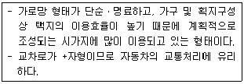
- 격자형
- T자형
- loop형
- cul-de-sac형
(정답률: 76%)
11. 상점 진열창 유리면의 반사를 방지하기 위한 대책으로 옳지 않은 것은?
- 곡면 유리를 사용한다.
- 유리를 사면으로 설치한다.
- 진열창 내부의 조도를 외부 조도보다 낮게 한다.
- 캐노피를 설치하여 진열창 외부에 그늘을 조성한다.
(정답률: 87%)
12. 아파트 단위주거의 단면구성형식 중 스킵 플로어형에 관한 설명으로 옳지 않은 것은?
- 전체적으로 유효면적이 증가한다.
- 공용부분인 복도면적이 늘어난다.
- 엘리베이터 정지층수를 줄일 수 있다.
- 단면 및 입면상의 다양한 변화가 가능하다.
(정답률: 68%)
13. 무창공장에 관한 설명으로 옳지 않은 것은?
- 공장 내 발생 소음이 작아진다.
- 온ㆍ습도 조절 유지비가 저렴하다.
- 실내의 조도는 인공 조명에 의해 조절된다.
- 외부로부터의 자극이 적어 작업 능률이 향상된다.
(정답률: 83%)
14. 학교건축에서 블록플랜에 관한 설명으로 옳지 않은 것은?
- 관리부분의 배치는 전체의 중심이 되는 곳이 좋다.
- 클러스터형이란 복도를 따라 교실을 배치하는 형식이다.
- 초등학교는 학년단위로 배치하는 것이 기본적인 원칙이다.
- 초등학교 저학년은 될 수 있으면 1층에 있게 하며, 교문에 근접시킨다.
(정답률: 73%)
15. 다음과 같은 조건에 있는 어느 학교 설계실의 순수율은?
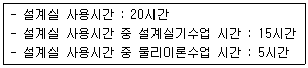
- 25%
- 33%
- 67%
- 75%
(정답률: 79%)
16. 백화점에 요구되는 대지조건과 가장 관계가 먼 것은?
- 일조, 통풍이 좋을 것
- 2면 이상이 도로에 면할 것
- 사람이 많이 왕래하는 곳일 것
- 역이나 버스정류장에서 가까울 것
(정답률: 82%)
17. M.C(modular coordination)에 관한 설명으로 옳지 않은 것은?
- 공기가 길어진다.
- 현장작업이 단순해진다.
- 설계 작업이 단순하고 간편해진다.
- 대량생산이 용이하고 생산단가가 내려간다.
(정답률: 83%)
18. 사무소 건축에서 엘리베이터 배치에 관한 설명으로 옳지 않는 것은?
- 일렬 배치는 8대를 한도로 한다.
- 교통동선의 중심에 설치하여 보행거리가 짧도록 배치한다.
- 대면배치 시 대면거리는 동일 군 관리의 경우 3.5~4.5m로 한다.
- 여러 대의 엘리베이터를 설치하는 경우, 그룹별 배치와 군 관리 운전방식으로 한다.
(정답률: 86%)
19. 고층사무소 건축에서 그림과 같은 저층부분(A)을 설치하였을 경우, 장점으로 옳지 않은 것은?
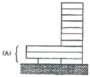
- 대지의 효율적인 이용
- 사무실 이외의 복합기능 부여
- 대지의 개방성 및 공공성 확보
- 고층동에 대한 스케일감의 완화
(정답률: 66%)
20. 한식주택에 관한 설명으로 옳지 않은 것은?
- 좌식생활 중심이다.
- 위치별 실의 분화이다.
- 각 실은 단일용도이다.
- 가구는 부차적 존재이다.
(정답률: 83%)
2과목: 건축시공
21. 공정계획에 관련된 용어에 관한 설명으로 옳지 않은 것은?
- 작업(activity) - 프로젝트를 구성하는 작업단위
- 결합점(node) - 네트워크의 결합점 및 개시점, 종료점
- 소요시간(duration) - 작업을 수행하는데 필요한 시간
- 플로트(float) - 결합점이 가지는 여유시간
(정답률: 70%)
22. 한 켜 안에 길이쌓기와 마구리 쌓기를 번갈아 쌓아 놓고, 다음 켜는 마구리가 길이의 중심부에 놓이게 쌓는 벽돌쌓기법은?
- 영식 쌓기
- 불식 쌓기
- 네덜란드식 쌓기
- 미식 쌓기
(정답률: 58%)
23. 국내에서 사용하는 고강도 콘크리트의 설계기준강도로 옳은 것은?
- 보통콘크리트 - 27MPa 이상, 경량콘크리트 - 21MPa 이상
- 보통콘크리트 - 30MPa 이상, 경량콘크리트 - 24MPa 이상
- 보통콘크리트 - 33MPa 이상, 경량콘크리트 - 27MPa 이상
- 보통콘크리트 - 40MPa 이상, 경량콘크리트 - 27MPa 이상
(정답률: 71%)
24. 건설업의 종합건설업 제도(EC화 : Engineering construction)에 관한 정의로 옳은 것은?
- 종래의 단순한 시공업과 비교하여 건설사업의 발굴 및 기획, 설계, 시공, 유지관리에 이르기까지 사업 전반에 관한 것을 종합, 기획관리하는 업무영역의 확대를 말한다.
- 각 공사별로 나누어져 있는 토목, 건축, 전기, 설비, 철골, 포장 등의 공사를 1개 회사에서 시공하도록 하는 종합건설 면허제도이다.
- 설계업을 하는 회사를 공사시공까지 할 수 있도록 업무 영역을 확대한 면허제도를 말한다.
- 시공업체가 설계업까지 할 수 있게 하는 면허제도이다.
(정답률: 76%)
25. 다음 중 건축용 단열재와 가장 거리가 먼 것은?
- 테라코타
- 펄라이트판
- 세라믹 섬유
- 연질섬유판
(정답률: 77%)
26. 아스팔트방수에 비해 시멘트 액체방수의 우수한 점으로 볼 수 있는 것은?
- 외기에 대한 영향 정도
- 균열의 발생정도
- 결함부 발견이 용이한 정도
- 방수 성능
(정답률: 62%)
27. 두께 1.0B로 벽돌벽 1m2을 쌓을 때 소요되는 벽돌의 매수는? (단, 표준형벽돌로써 벽돌치수 190×90×57mm, 할증율 3% 가산, 줄눈두께 10mm)
- 130매
- 149매
- 154매
- 177매
(정답률: 54%)
28. 바차트와 비교한 네트워크 공정표의 장점이라고 볼 수 없는 것은?
- 작업상호간의 관련성을 알기 쉽다.
- 공정계획의 작성시간이 단축된다.
- 공사의 진척관리를 정확히 실시할 수 있다.
- 공기단축 가능요소의 발견이 용이하다.
(정답률: 74%)
29. 강재의 인장시험결과, 하중을 가력하기 전의 표점거리가 100mm이고 실험 후 표점거리가 1⑤mm로 늘어났다면, 이 강재의 변형률은?
- 0.⑤
- 0.06
- 0.07
- 0.08
(정답률: 75%)
30. 108mm규격의 정사각형 타일을 줄눈폭 6mm로 붙일 때 1m2당 타일 매수(정미량)로 옳은 것은?
- 72매
- 73매
- 75매
- 77매
(정답률: 51%)
31. 굳지 않은 콘크리트가 현장에 도착했을 때 실시하는 품질관리시험 항목이 아닌 것은?
- 염화물
- 조립률
- 슬럼프
- 공기량
(정답률: 60%)
32. 실제의 건물을 지지하는 지반면에 재하판을 설치한 후 하중을 단계적으로 가하여 지반반력계수와 지반의 지지력 등을 구하는 시험은?
- 직접 전단시험
- 일축압축시험
- 평판재하시험
- 삼축압축시험
(정답률: 80%)
33. 아스팔트 품질시험항목과 가장 거리가 먼 것은?
- 비표면적 시험
- 침입도
- 감온비
- 신도 및 연화점
(정답률: 55%)
34. 계측관리 항목 및 기기가 잘못 짝지어진 것은?
- Piezometer - 지반내 간극수압의 증감을 측정
- Water level meter - 지하수위 변화를 실측
- Tiltmeter - 인접구조물의 기울기변화를 측정
- Load Cell - 지반의 투수계수를 측정
(정답률: 62%)
35. 창호철물의 용도에 관한 설명으로 옳지 않은 것은?
- 나이트 래취(night latch) - 여닫이 문의 상하에 달려서 문의 회전축이 된다.
- 플로어 힌지(floor hinge) - 자동적으로 여닫이 속도를 조절한다.
- 도어체크(door check) - 열려진 여닫이 문이 저절로 닫혀지게 한다.
- 크레센트(crescent) - 오르내리 창을 잠그는데 쓰인다.
(정답률: 62%)
36. 콘크리트에 방사형의 망상균열이 발생하는 가장 큰 원인은?
- 전단보강 부족
- 시멘트의 이상팽창
- 인장철근량 부족
- 시멘트의 수화열
(정답률: 64%)
37. 일반경쟁입찰에 관한 설명으로 옳지 않은 것은?
- 담합의 우려가 줄어든다.
- 균등한 입찰참가의 기회가 부여된다.
- 공정하고 자유로운 경쟁이 가능하다.
- 공사비가 다소 비싸질 우려가 있다.
(정답률: 75%)
38. 철골 용접작업 시 유의사항으로 옳지 않은 것은?
- 용접 자세는 아래보기자세, 수직자세 등 여러 가지가 있으나 일반적으로 하향자세로 하는 것이 좋다.
- 용접 전에 용접 모재 표면의 수분, 슬래그, 먼지 등 불순물을 제거한다.
- 수축량이 작은 부분부터 용접하고 수축량이 가장 큰 부분은 최후에 용접한다.
- 감전방지를 위해 안전홀더를 사용한다.
(정답률: 76%)
39. 콘크리트 타설 후 실시하는 양생에 관한 설명으로 옳지 않은 것은?
- 경화초기에 시멘트의 수화반응에 필요한 수분을 공급한다.
- 직사광선, 풍우, 눈에 대하여 노출하여 실시한다.
- 진동, 충격 등의 외력으로부터 보호한다.
- 강도확보에 따른 적당한 온도와 습도환경을 유지한다.
(정답률: 81%)
40. 목구조에 사용되는 보강철물과 사용개소의 조합으로 옳지 않은 것은?
- 안장쇠 - 큰보와 작은보
- ㄱ자쇠 - 평기둥과 층도리
- 띠쇠 - 도대와 기둥
- 감잡이쇠 - 왕대공과 평보
(정답률: 51%)
3과목: 건축구조
41. 그림과 같은 단순보에서 C점에 대한 휨응력은?
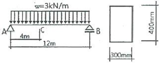
- 5MPa
- 6MPa
- 7MPa
- 8MPa
(정답률: 51%)
42. 그림과 같은 트러스에서 응력이 일어나지 않는 부재수는?
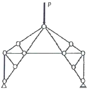
- 4개
- 6개
- 8개
- 10개
(정답률: 48%)
43. 그림과 같은 구조물의 부정정 차수는?
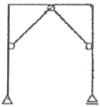
- 1차 부정정
- 2차 부정정
- 3차 부정정
- 4차 부정정
(정답률: 59%)
44. 다음 그림과 같은 단순보의 B지점의 반력값은?
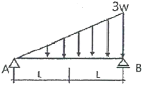
- ωL/6
- ωL/3
- ωL
- 2ωL
(정답률: 56%)
45. fy=400MPa, fck=24MPa의 보통중량콘크리트를 사용한 표준갈고리를 갖는 인장이형철근(D22)의 기본정착 길이(lhb)는? (단, D22의 공칭지름은 22.2mm임)
- 352mm
- 385mm
- 415mm
- 435mm
(정답률: 44%)
46. 다음 중 전달율을 이용하여 부정정 구조물을 해석하는 방법은?
- 처짐각법
- 모멘트 분배법
- 변형일치법
- 3연 모멘트법
(정답률: 59%)
47. 철근 이음에 관한 설명으로 옳은 것은?
- 철근의 겹침 이음은 모든 직경의 철근이 가능하다.
- 용접 이음은 철근의 설계기준항복강도 fy의 100% 이상을 발휘할 수 있는 완전용접이어야 한다.
- 기계적 연결은 철근의 설계기준항복강도 fy의 125% 이상을 발휘할 수 있는 완전 기계적 연결이어야 한다.
- 휨부재에서 서로 직접 접촉되지 않게 겹침이음된 철근은 무시한다.
(정답률: 62%)
48. 철근콘크리트 구조에 관한 설명으로 옳지 않은 것은?
- 철근의 피복두께는 주근의 중심으로부터 콘크리트 표면까지의 최단거리를 말한다.
- 철근의 표면상태와 단면모양에 따라 부착력이 좌우된다.
- 단순보에 연직하중이 작용하면 중립축을 경계선으로 위쪽에는 압축응력이 발생한다.
- 콘크리트와 철근이 강력히 부착되면 철근의 좌굴이 방지된다.
(정답률: 62%)
49. 다음 그림에서 A점의 수직반력이 0이 되기 위해서는 등분포 하중의 크기를 얼마로 하면 되는가?
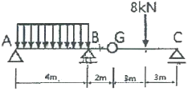
- 1kN/m
- 2kN/m
- 3kN/m
- 4kN/m
(정답률: 29%)
50. 다음 그림은 철근콘크리트 보 단부의 단면이다. 복근비와 인장 철근비는? (단, D22 1개의 단면적은 387mm2임)
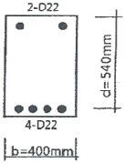
- 복근비 γ=2, 인장철근비 ρt=0.00717
- 복근비 γ=0.5, 인장철근비 ρt=0.00717
- 복근비 γ=2, 인장철근비 ρt=0.00369
- 복근비 γ=0.5, 인장철근비 ρt=0.00369
(정답률: 56%)
51. 재료의 탄성계수를 옳게 표시한 것은?
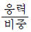
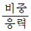
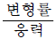
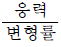
(정답률: 60%)
52. 조적식구조인 건축물 중 2층 건축물에 있어서 2층 내력벽의 최대 높이는 얼마인가?
- 3m
- 3.5m
- 4m
- 4.5m
(정답률: 56%)
53. 그림과 같이 연직하중을 받는 트러스에서 부재의 부재력으로 옳은 것은?
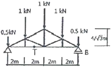
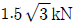
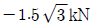
- 3kN
- -3kN
(정답률: 39%)
54. fy=350MPa, fck=24MPa를 사용한 콘크리트 보의 균형철근비(ρb)를 구하면?
- 0.0103
- 0.0313
- 0.⑤13
- 0.0813
(정답률: 39%)
55. 그림과 같은 단순보에서 단면에 생기는 최대 전단 응력도를 구하면? (단, 보의 단면크기는 150×200mm)
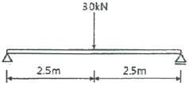
- 0.5MPa
- 0.65MPa
- 0.75MPa
- 0.85MPa
(정답률: 51%)
56. 힘의 개념에 관한 설명으로 옳지 않은 것은?
- 힘은 변위, 속도와 같이 크기와 방향을 갖는 백터의 하나이며, 3요소는 크기, 작용점, 방향이다.
- 힘은 물체에 작용해서 운동상태에 있는 물체에 변화를 일으키게 할 수 있다.
- 물체에 힘의 작용 시 발생하는 가속도는 힘의 크기에 반비례하고 물체의 질량에 비례한다.
- 강체에 힘이 작용하면 작용점은 작용선상의 임의의 위치에 옮겨 놓아도 힘의 효과는 변함없다.
(정답률: 67%)
57. 휨모멘트 M=24kNㆍm를 받는 보의 허용휨응력이 12MPa일 경우 안전한 보의 개략적인 최소높이(h)를 구하면? (단, 보의 높이는 폭의 2배이다.)
- 200mm
- 300mm
- 400mm
- 500mm
(정답률: 35%)
58. 보통중량콘크리트와 400MPa 철근을 사용한 양단 연속 1방향 슬래브의 스팬이 4.2m 일 때 처짐을 계산하지 않는 경우 슬래브의 최소 두께로 옳은 것은?
- 120mm
- 130mm
- 140mm
- 150mm
(정답률: 46%)
59. 지름 300mm인 기성콘크리트말뚝을 시공하고자 한다. 말뚝의 최소 중심간격으로 가장 적당한 것은?
- 600mm
- 750mm
- 900mm
- 1000mm
(정답률: 62%)
60. 용접개시점과 종료점에 용착금속에 결함이 없도록 하기 위하여 설치하는 보조재는?
- 뒷댐재
- 스캘럽
- 엔드탭
- 오버랩
(정답률: 67%)
4과목: 건축설비
61. 수ㆍ변전계통에서 지락 사고 발생 시 흐르는 영상전류를 검출하여 지락 계전기에 의하여 차단기를 동작시키는 것은?
- 단로기
- 영상 변압기
- 영상 변류기
- 계기용 변류기
(정답률: 46%)
62. 배수 수직관 상부를 연장하여 대기에 개구한 통기관은?
- 신정통기관
- 습윤통기관
- 각개통기관
- 결합통기관
(정답률: 64%)
63. 압력에 따른 도시가스의 분류에서 중압의 압력 범위로 옳은 것은?
- 0.1MPa 이상 1MPa 미만
- 0.1MPa 이상 10MPa 미만
- 0.5MPa 이상 5MPa 미만
- 0.5MPa 이상 10MPa 미만
(정답률: 65%)
64. 벽체를 구성하는 재료의 열전도율 단위로 옳은 것은?
- W/mㆍK
- W/mㆍh
- W/mㆍhㆍK
- W/m2ㆍK
(정답률: 58%)
65. 세정밸브식 대변기의 급수관 관경은 최소 얼마 이상으로 하는가?
- 15A
- 20A
- 25A
- 30A
(정답률: 63%)
66. 같은 크기의 다른 보일러에 비해 전열면적이 크고 증기발생이 빠르며 고압증기를 만들기 쉬워서 대용량의 보일러로서 적당한 것은?
- 입형 보일러
- 수관 보일러
- 노통 보일러
- 관류 보일러
(정답률: 47%)
67. 전압 220[V]를 가하여 10[A]의 전류가 흐르는 전동기를 5시간 사용하였을 때 소비되는 전력량[kWh]은?
- 5
- 11
- 15
- 22
(정답률: 59%)
68. 취출구 방향을 상하좌우 자유롭게 조절할 수 있어 주방, 공장 등의 국부냉방에 적용되는 취출구는?
- 팬형
- 라인형
- 핑거루버
- 아네모스탯형
(정답률: 56%)
69. 다음 중 배관을 직선으로 연결하는데 쓰이는 배관 부속류로만 구성된 것은?
- 플러그, 캡
- 엘보, 벤드
- 크로스, 티
- 소켓, 플랜지
(정답률: 64%)
70. 금속관 배선공사에 관한 설명으로 옳지 않은 것은?
- 전선의 인입 및 교체가 어렵다.
- 철근콘크리트 매설공사에 사용된다.
- 옥내, 옥외 등 사용 장소가 광범위하다.
- 외부적 응력에 대해 전선보호의 신뢰성이 높다.
(정답률: 62%)
71. 생물화학적 산소요구량(BOD) 제거율을 나타내는 식은?
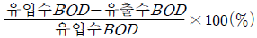
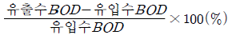
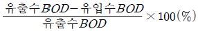
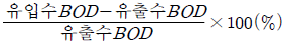
(정답률: 73%)
72. 수도본관에서 가장 높은 곳에 있는 수전까지의 높이가 30m인 경우, 수도본관의 최저 필요압력은? (단, 수전은 샤워기로 최소 필요압력은 70kPa, 배관 중 마찰손실은 5mAq이다.)
- 약 1⑤kPa
- 약 210kPa
- 약 420kPa
- 약 630kPa
(정답률: 37%)
73. 환기에 관한 설명으로 옳지 않은 것은?
- 온도차에 의해 환기가 이루어질 수 있다.
- 환기지표로는 이산화탄소가 사용되기도 한다.
- 오염원이 있는 실은 급기 위주 방식을 사용한다.
- 급기만을 송풍기로 하는 방식은 실내압이 정압이 된다.
(정답률: 53%)
74. 정풍량 단일덕트 공조방식에 관한 설명으로 옳은 것은?
- 공조 대상실의 부하 변동에 따라 송풍량을 조절하는 전공기식 공조방식
- 실내에 설치한 팬코일 유닛에 냉수 또는 온수를 공급하여 공조하는 방식
- 송풍량을 일정하게 하고 공조 대상실의 부하변동에 따라 송풍온도를 조절하는 전공기식 공조방식
- 냉풍과 온풍의 2개 덕트를 사용하여 말단의 혼합 유닛으로 냉풍과 온풍을 혼합해 송풍하는 전공기식 공조방식
(정답률: 62%)
75. 다음은 옥내소화전설비의 가압송수장치에 관한 설명이다. ( ) 안에 알맞은 것은? (단, 전동기에 따른 펌프를 이용하는 가압송수 장치의 경우)
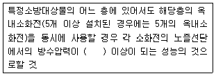
- 0.17MPa
- 0.26MPa
- 0.35MPa
- 0.45MPa
(정답률: 54%)
76. 급탕설비의 안전장치 중 보일러, 저탕조 등 밀폐 가열장치 내의 압력상승을 도피시키기 위해 설치하는 것은?
- 팽창관
- 용해전
- 신축이음
- 팽창밸브
(정답률: 57%)
77. 빛을 발하는 점에서 어느 방향으로 향한 단위 입체 각당의 발산광속으로 정의되는 용어는?
- 광속
- 광도
- 조도
- 휘도
(정답률: 49%)
78. 냉방부하의 산정 시 외벽 또는 지붕에서 일사의 영향을 고려한 온도는?
- 유효온도
- 평균복사온도
- 상당외기온도
- 대수평균온도
(정답률: 70%)
79. 난방설비에서 온수난방과 비교한 증기난방의 특징으로 옳지 않은 것은?
- 배관 구경이나 방열기가 작아진다.
- 예열시간이 짧고 간헐 운전에 적합하다.
- 건물 높이에 관계없이 증기를 쉽게 운반할 수 있다.
- 증기의 유량제어가 용이하여 실내온도 조절이 쉽다.
(정답률: 44%)
80. 단효용 흡수식 냉동기와 비교한 2중효용 흡수식 냉동기의 특징으로 옳은 것은?
- 저온 흡수기와 고온 흡수기가 있다.
- 저온 발생기와 고온 발생기가 있다.
- 저온 응축기와 고온 응축기가 있다.
- 저온 팽창밸브와 고온 팽창밸브가 있다.
(정답률: 44%)
5과목: 건축관계법규
81. 피뢰설비를 설치하여야 하는 대상 건축물의 높이 기준은?
- 10m 이상
- 15m 이상
- 20m 이상
- 30m 이상
(정답률: 74%)
82. 건축법령상 리모델링이 쉬운 구조의 내용으로 옳지 않은 것은?
- 구조체에서 건축설비를 분리할 수 있을 것
- 구조체에서 구조재료를 분리할 수 있을 것
- 구조체에서 내부 마감재료를 분리할 수 있을 것
- 구조체에서 외부 마감재료를 분리할 수 있을 것
(정답률: 66%)
83. 제1종 일반주거지역안에서 건축할 수 있는 건축물에 속하지 않는 것은?
- 노유자시설
- 공동주택 중 아파트
- 제1종 근린생활시설
- 교육연구시설 중 고등학교
(정답률: 76%)
84. 피난안전구역의 구조 및 설비에 관한 기준 내용으로 옳지 않은 것은?
- 피난안전구역의 높이는 1.8m 이상일 것
- 피난안전구역의 내부마감재료는 불연재료로 설치할 것
- 건축물의 내부에서 피난안전구역으로 통하는 계단은 특별피난계단의 구조로 설치할 것
- 피난안전구역에는 식수공급을 위한 급수전을 1개소 이상 설치하고 예비전원에 의한 조명설비를 설치할 것
(정답률: 66%)
85. 특별시나 광역시에 건축하려고 하는 경우, 특별시장이나 광역시장의 허가를 받아야 하는 대상 건축물의 연면적 기준은?
- 연면적의 합계가 1만 제곱미터 이상인 건축물
- 연면적의 합계가 5만 제곱미터 이상인 건축물
- 연면적의 합계가 10만 제곱미터 이상인 건축물
- 연면적의 합계가 20만 제곱미터 이상인 건축물
(정답률: 64%)
86. 주차장법령상 다음과 같이 정의되는 주차장의 종류는?
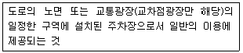
- 부설주차장
- 노상주차장
- 노외주차장
- 기계식주차장
(정답률: 70%)
87. 문화 및 집회시설 중 공연장의 개별관람석의 바닥면적이 1,000m2인 경우, 개별관람석 출구의 유효너비의 합계는 최소 얼마 이상으로 하여야 하는가?
- 1.5m
- 3.0m
- 4.5m
- 6.0m
(정답률: 41%)
88. 다음 중 대수선의 범위에 속하지 않는 것은?
- 미관지구에서 건축물의 외부형태를 변경하는 것
- 다세대주택의 세대 내 간막이벽을 해체하는 것
- 주계단ㆍ피난계단 또는 특별피난계단을 증설하는 것
- 방화벽 또는 방화구획을 위한 바닥 또는 벽을 수선 또는 변경하는 것
(정답률: 52%)
89. 다음은 대지 안의 공지에 관한 기준 내용이다. ( ) 안에 알맞은 것은?
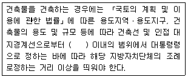
- 2m
- 3m
- 5m
- 6m
(정답률: 35%)
90. 어느 건축물의 연면적 중 주차장으로 사용되는 부분의 비율이 70% 이다. 이 건축물이 주차전용건축물이라면, 다음 중 이 건축물의 주차장 외로 사용되는 용도로 옳은 것은?
- 운동시설
- 의료시설
- 수련시설
- 교육연구시설
(정답률: 42%)
91. 공작물을 축조하는 경우, 특별자치시장ㆍ특별자치도지사 또는 시장ㆍ군수ㆍ구청장에게 신고를 하여야 하는 대상 공작물에 속하지 않는 것은?
- 높이가 3m인 담장
- 높이가 5m인 굴뚝
- 높이가 5m인 광고탑
- 바닥면적이 35m2인 지하대피호
(정답률: 63%)
92. 노외주차장인 주차전용건축물의 건축 제한에 관한 기준 내용으로 옳지 않은 것은?
- 용적률 : 1,500% 이하
- 높이 제한 : 30m 이하
- 건폐율 : 100분의 90 이하
- 대지면적의 최소한도 : 45m2 이상
(정답률: 49%)
93. 부설주차장의 설치대상 시설물이 판매시설인 경우, 설치기준으로 옳은 것은?
- 시설면적 100m2당 1대
- 시설면적 150m2당 1대
- 시설면적 200m2당 1대
- 시설면적 300m2당 1대
(정답률: 70%)
94. 다음은 건축물의 점검 결과 보고에 관한 기준 내용이다. ( ) 안에 알맞은 것은?
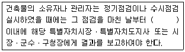
- 15일
- 30일
- 60일
- 90일
(정답률: 76%)
95. 다중이용 건축물의 층수 기준으로 옳은 것은?
- 7층 이상
- 10층 이상
- 16층 이상
- 20층 이상
(정답률: 53%)
96. 층수가 15층이고, 6층 이상의 거실면적의 합계가 10,000m2인 업무시설에 설치하여야 하는 승용승강기의 최소 대수는? (단, 8인승 승강기의 경우)
- 4대
- 5대
- 6대
- 7대
(정답률: 61%)
97. 건축법령상 대지면적에 대한 건축면적의 비율로 정의되는 것은?
- 유효율
- 이용률
- 용적률
- 건폐율
(정답률: 77%)
98. 건축물의 관람석 또는 집회실로부터 바깥쪽으로의 출구로 쓰이는 문을 안여닫이로 하여서는 안되는 대상 건축물에 속하지 않는 것은?
- 종교시설
- 위락시설
- 판매시설
- 장례시설
(정답률: 47%)
99. 대통령령으로 정하는 용도와 규모의 건축물에 일반이 사용할 수 있도록 대통령령으로 정하는 기준에 따라 소규모 휴식시설 등의 공개 공지 또는 공개 공간을 설치하여야 하는 대상 지역에 속하지 않는 것은?
- 상업지역
- 준주거지역
- 준공업지역
- 일반공업지역
(정답률: 39%)
100. 도시ㆍ군계획 수립 대상지역의 일부에 대하여 토지이용을 합리화하고 그 기능을 증진시키며 미관을 개선하고 양호한 환경을 확보하며, 그 지역을 체계적ㆍ계획적으로 관리하기 위하여 수립하는 도시ㆍ군관리계획은?
- 광역도시계획
- 지구단위계획
- 도시ㆍ군기본계획
- 입지규제최소구역계획
(정답률: 72%)